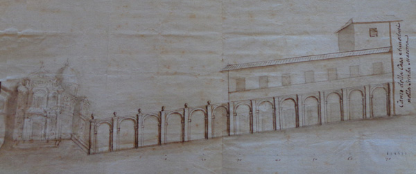

Il 1° novembre del 1681 la statua miracolosa della Madonna di Provenzano, viene incoronata solennemente dal Cardinale Flavio Chigi con la corona d'oro inviata da Capitolo di San Pietro in Vaticano, e prende, ora, il suo aspetto definitivo.
Questo privilegio antico veniva concesso esclusivamente alle immagini della Vergine che erano oggetto di di grande venerazione da parte dei fedeli oppure alle quali erano attribuite grazie ricevute di particolare prestigio.
Il privilegio dell'incoronazione veniva accordato dopo aver dimostrato, con documenti comprovanti i miracoli attribuiti alla icona sacra, ma per la Madonna di Provenzano se ne parla e se ne attestano da oltre un secolo e mezzo ormai.
Come che sia, in questo 1° novembre 1681, con una cerimonia fastosa che parte da Palazzo Pubblico, in processione, si sancisce e si legittima, sia da parte del potere ecclesiastico che laico, ancora una volta, l'importanza per Siena di questa immagine sacra.
Sono presenti tutte le più alte cariche: il clero senese, il Collegio di Balia, i nobili e una folla immensa di popolo che è quello che ama maggiormente "l'advocata nostra" e alla quale indirizza le proprie preghiere.
Il corteo esce dal Chiasso Largo, sosta a palazzo Chigi Zondadari (dove si unisce ai fedeli il cardinale Flavio Chigi) e si dirige verso Provenzano per la cerimonia ufficiale di incoronazione della Vergine passando da Piazza Tolomei e scendendo la Costa del Moro.
La corona d’oro (che ancora cinge la testa della Madonna sull'altare Maggiore della Collegiata) è finanziata da Alessandro Sforza.
E proprio in occasione di questa solenne processione si rese evidente più che mai la necessità di creare un accesso diretto a Provenzano, ormai meta di continui pellegrinaggi e frequenti eventi processionali. Per questo però, bisognerà attendere ancora dieci anni perchè solo nel giugno del 1691 il Collegio di Balia autorizzerà la realizzazione della "Strada Nuova di Provenzano" (poi e oggi via Lucherini) e degli edifici laterali di completamento, in modo da rendere, come chiedono il Rettore Alcibiade Lucarini (o Lucherini) Bellanti e i Savii dell’Opera di Provenzano, giusto onore ai senesi e alle “gite dell'eccelsa Signoria, e de Principi e personaggi, particolarmente forestieri, che vengano a visitare questa miracolosissima imagine”.

progetto della nuova strada che conduce a Provenzano

 ACCADDE OGGI
ACCADDE OGGI